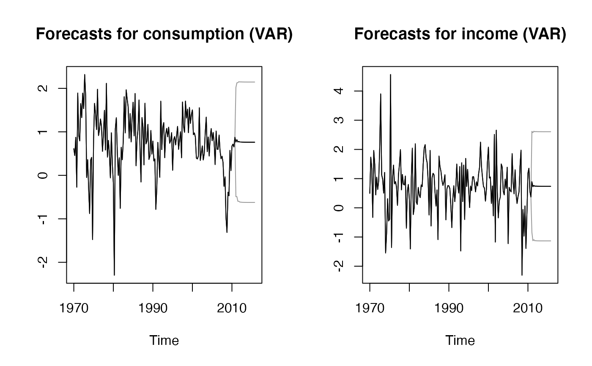

Vector Autoregressive model adapted from vars::VAR (only for benchmarking)
varf( y, h = 5, level = 95, lags = 1, type_VAR = c("const", "trend", "both", "none"), ... )
| y | A multivariate time series of class |
|---|---|
| h | Forecasting horizon |
| level | Confidence level for prediction intervals |
| lags | Number of lags |
| type_VAR | Type of deterministic regressors to include. |
| ... | Additional parameters to be passed to vars::VAR. |
An object of class "mtsforecast"; a list containing the following elements:
The name of the forecasting method as a character string
Point forecasts for the time series
Lower bound for prediction interval
Upper bound for prediction interval
The original time series
Residuals from the fitted model
Bernhard Pfaff (2008). VAR, SVAR and SVEC Models: Implementation
Within R Package vars. Journal of Statistical Software 27(4). URL
http://www.jstatsoft.org/v27/i04/.
Pfaff, B. (2008) Analysis of Integrated and Cointegrated Time Series with R. Second Edition. Springer, New York. ISBN 0-387-27960-1
T. Moudiki
#> $mean #> Quotes TV.advert #> May 2005 12.18625 7.496076 #> Jun 2005 11.32706 7.053645 #> Jul 2005 11.71033 7.268821 #> Aug 2005 12.62982 7.749828 #> Sep 2005 13.44896 8.163502 #> Oct 2005 13.85680 8.355460 #> Nov 2005 13.86539 8.341180 #> Dec 2005 13.65933 8.222100 #> Jan 2006 13.43491 8.100921 #> Feb 2006 13.30631 8.034485 #> #> $lower #> Quotes TV.advert #> May 2005 9.606273 5.550692 #> Jun 2005 7.696673 4.746624 #> Jul 2005 7.377925 4.757039 #> Aug 2005 7.828978 5.090650 #> Sep 2005 8.406300 5.423177 #> Oct 2005 8.725938 5.582815 #> Nov 2005 8.714092 5.558191 #> Dec 2005 8.502736 5.433765 #> Jan 2006 8.273739 5.308648 #> Feb 2006 8.141282 5.239921 #> #> $upper #> Quotes TV.advert #> May 2005 14.76623 9.441460 #> Jun 2005 14.95746 9.360665 #> Jul 2005 16.04273 9.780603 #> Aug 2005 17.43066 10.409005 #> Sep 2005 18.49161 10.903827 #> Oct 2005 18.98766 11.128105 #> Nov 2005 19.01668 11.124169 #> Dec 2005 18.81591 11.010435 #> Jan 2006 18.59608 10.893194 #> Feb 2006 18.47134 10.829050 #> #> $x #> Quotes TV.advert #> Jan 2002 12.97065 7.212725 #> Feb 2002 15.38714 9.443570 #> Mar 2002 13.22957 7.534250 #> Apr 2002 12.97065 7.212725 #> May 2002 15.38714 9.443570 #> Jun 2002 11.72288 6.415215 #> Jul 2002 10.06177 5.806990 #> Aug 2002 10.82279 6.203600 #> Sep 2002 13.28707 7.586430 #> Oct 2002 14.57832 8.004935 #> Nov 2002 15.60542 8.834980 #> Dec 2002 15.93515 8.957255 #> Jan 2003 16.99486 9.532990 #> Feb 2003 16.87821 9.392950 #> Mar 2003 16.45128 8.918560 #> Apr 2003 15.28118 8.374120 #> May 2003 15.88901 9.844505 #> Jun 2003 15.67747 9.849390 #> Jul 2003 13.28780 8.402730 #> Aug 2003 12.64484 7.920675 #> Sep 2003 11.82771 7.436085 #> Oct 2003 9.69184 6.340490 #> Nov 2003 10.30415 6.939995 #> Dec 2003 11.38253 6.977100 #> Jan 2004 12.95149 8.010201 #> Feb 2004 13.63092 9.565460 #> Mar 2004 9.12098 6.272510 #> Apr 2004 8.39468 5.707495 #> May 2004 12.30076 7.963540 #> Jun 2004 13.84831 8.494221 #> Jul 2004 15.96246 9.789085 #> Aug 2004 14.19738 8.692825 #> Sep 2004 12.85922 8.057230 #> Oct 2004 12.08837 7.588995 #> Nov 2004 12.93375 8.244881 #> Dec 2004 11.72235 6.675540 #> Jan 2005 15.47126 9.219604 #> Feb 2005 18.43898 10.963800 #> Mar 2005 17.49186 10.456290 #> Apr 2005 14.49168 8.728600 #> #> $level #> [1] 95 #> #> $method #> [1] "VAR" #> #> $residuals #> Quotes TV.advert #> 1 -1.21221475 -1.08872613 #> 2 -0.60932129 -0.82860344 #> 3 1.01230477 1.18158972 #> 4 -2.71890475 -2.20776113 #> 5 -2.72251102 -1.70919352 #> 6 -0.55627892 -0.54141690 #> 7 -0.20479384 -0.28997814 #> 8 -0.97575658 -0.94287829 #> 9 -0.70287179 -0.39170276 #> 10 0.29049077 0.01604860 #> 11 1.18975618 0.48869323 #> 12 0.18234760 -0.09851074 #> 13 0.29310649 -0.26448239 #> 14 -1.07851304 -0.80589860 #> 15 1.01052375 1.42900180 #> 16 2.49178770 1.84290932 #> 17 -0.05105206 0.08295490 #> 18 1.22919439 0.62561003 #> 19 -0.52505090 -0.26983308 #> 20 -2.14850232 -1.06600517 #> 21 0.49178004 0.55454269 #> 22 0.32815535 -0.16560400 #> 23 -0.65047836 -0.27077838 #> 24 -0.01554935 1.28542931 #> 25 -1.25939039 -0.81665029 #> 26 -0.15783738 -0.31178759 #> 27 2.20122635 1.34517712 #> 28 -0.34491421 -0.25167808 #> 29 1.42837171 0.97562261 #> 30 -1.00797836 -0.46675086 #> 31 0.27751196 0.27900155 #> 32 0.28493881 0.19352529 #> 33 0.95161090 0.75836854 #> 34 -1.03600764 -1.27947700 #> 35 1.83451752 1.13630731 #> 36 2.30512260 1.55003411 #> 37 0.26021409 0.35235401 #> 38 -0.08503400 -0.02945364 #> #> attr(,"class") #> [1] "mtsforecast"res <- varf(fpp::usconsumption, h=20, lags=2) par(mfrow=c(1, 2)) plot(res, "consumption") plot(res, "income")